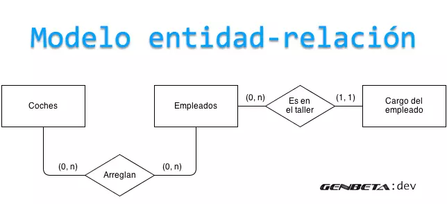
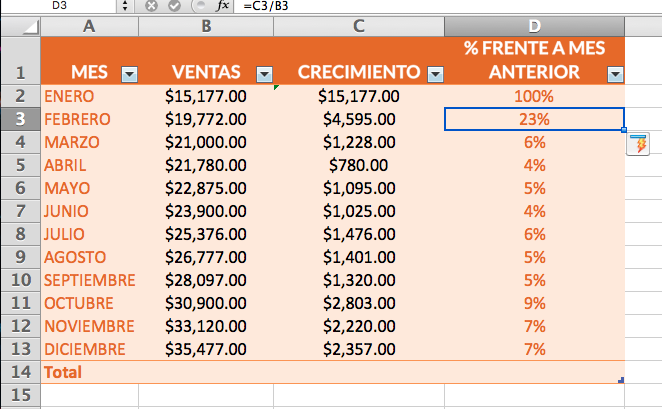

Exposición Clases de Relación
Ingeniería en Sistemas
Integrantes
Eber Aldair Badillo Castillo
José Luis Gress Vargas
Yonatan Gabriel Fernández Domínguez
Jesús Oswaldo Martínez Rojo
Jorge Adrián Jimenez Morales
Clases de Relación
* Persistentes
* Temporales
Introducción
En el mundo de la informática, las relaciones entre entidades son fundamentales para el almacenamiento y la gestión de datos. Estas relaciones pueden clasificarse en dos categorías principales: persistentes y temporales. La distinción entre ambas radica en la duración de la relación y su impacto en el estado del sistema.
Las relaciones persistentes son aquellas que se mantienen a lo largo del tiempo y sobreviven a la ejecución del programa o la transacción. Estas relaciones modifican el estado del sistema de forma permanente y son esenciales para la estructura y la integridad de los datos. Un ejemplo de una relación persistente es la que existe entre un cliente y un pedido en un sistema de comercio electrónico.
En contraste, relaciones temporales son aquellas que existen solo durante un período de tiempo limitado y desaparecen una vez que se cumple su propósito. Estas relaciones no modifican el estado del sistema de forma permanente y son útiles para tareas específicas como la comparación de datos o el procesamiento temporal de información. Un ejemplo de una relación temporal es la que existe entre un usuario y un carrito de compra en un sistema de comercio electrónico.
Relaciones Persistentes
Las relaciones persistentes en las bases de datos son aquellas que se mantienen a lo largo del tiempo y sobreviven a la ejecución del programa o la transacción. Modifican el estado del sistema de forma permanente. Estas relaciones almacenan información sobre entidades y sus conexiones de forma duradera, permitiendo un acceso y recuperación eficientes.
Duración: Permanentes.
Impacto en el estado del sistema: Modifican el estado del sistema.
Uso: Modelar entidades y relaciones que son permanentes.
Relaciones Persistentes
Relación Uno a Uno (1:1)
Relación Uno a Muchos (1:N)
Relación Muchos a Muchos (N:N)
Relación Reflexiva
Relación Asociativa
Relaciones Persistentes
Relación Uno a Uno
Definición: Una entidad en una tabla se relaciona con una única entidad en otra tabla.
Ejemplo: Un cliente tiene una única cuenta de usuario.
Importancia: Permite un almacenamiento eficiente de datos relacionados sin redundancia.

Relaciones Persistentes
Relación Uno a Muchos
Definición: Una entidad en una tabla se relaciona con múltiples entidades en otra tabla.
Ejemplo: Un cliente tiene múltiples pedidos.
Importancia: Permite organizar datos jerárquicamente y facilita la agregación de datos. Además, permite modelar relaciones de tipo "categoría" y facilita la búsqueda y el filtrado de datos.

Relaciones Persistentes
Relación Muchos a Muchos
Definición: Múltiples entidades en una tabla se relacionan con múltiples entidades en otra tabla.
Ejemplo: Múltiples estudiantes asisten a múltiples clases.
Importancia: Permite modelar relaciones complejas entre entidades y facilita la gestión de datos interconectados.

Relaciones Persistentes
Relación Reflexiva
Definición: Una entidad se relaciona consigo misma.
Ejemplo: Un empleado tiene un supervisor que también es un empleado.
Importancia: Permite modelar jerarquías y relaciones cíclicas.

Relaciones Persistentes
Relación Asociativa
Definición: Una entidad adicional se utiliza para conectar dos o más entidades principales.
Ejemplo: La entidad "Escribir" conecta la entidad "Libro" con la entidad "Autor".
Importancia: Permite modelar relaciones complejas que no se pueden representar con relaciones simples.

Relaciones Temporales
Las relaciones temporales en las bases de datos son aquellas que existen solo durante un período de tiempo limitado y desaparecen una vez que se cumple su propósito. No modifican el estado del sistema de forma permanente. Estas relaciones capturan información sobre entidades y sus conexiones durante un intervalo específico, permitiendo un análisis y seguimiento de cambios a lo largo del tiempo.
Duración: Temporales.
Impacto en el estado del sistema: No modifican el estado del sistema.
Uso: Modelar entidades y relaciones que son temporales.
Relaciones Temporales
Temporalmente Simple
Válida Temporal
Histórica Temporal
Relaciones Temporales
Relación Temporalmente Simple
Definición: Una relación que existe durante un período de tiempo específico.
Ejemplo: La relación entre un estudiante y un curso durante un semestre.
Importancia: Permite modelar eventos y actividades que tienen una duración limitada.

Relaciones Temporales
Relación Válida Temporal
Definición: Una relación que es válida dentro de un período de tiempo específico.
Ejemplo: La relación entre un empleado y su cargo durante un período de empleo.
Importancia: Permite modelar cambios en las relaciones a lo largo del tiempo.

Relaciones Temporales
Relación Histórica Temporal
Definición: Una relación que registra el historial de cambios en una entidad a lo largo del tiempo.
Ejemplo: El historial de cambios en la dirección de un cliente.
Importancia: Permite realizar un seguimiento del historial de cambios y analizar datos que varían a lo largo del tiempo.
